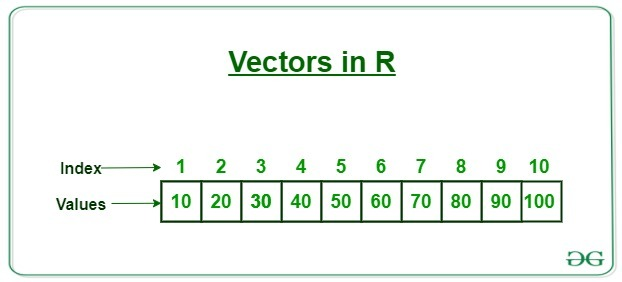
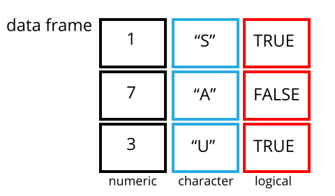

This is the course handbook for WolfWorks: An introduction to R.
Objectives:
data.frame and access information from this structure using indexingR has many structures in which data can be stored and manipulated:
The most common and basic of these structures is a vector, sometimes referred to as an atomic vector. Whilst vectors can be used as a structure in themselves, they are also the basic building blocks of several other data types, as we will see later.
A vector is simply a collection of values. These values can any of the 6 basic data types in R:
"a", "fish", "3.14". If a number is found in quotation marks, R will interpret this data as being of type character, not numeric. This is important because R cannot then use this data in a numeric manner i.e., to carry out arithmetic.TRUE, FALSE classData types 5 and 6 are rarely used and will not be covered in this workshop. As outlined above, numeric data in R can be stored as either double or integer. You don’t need to worry about this because R will automatically convert between these classes when required for mathemetical purposes. There is really no need to explicitly state or know which or the two numeric classes the data is.
A vector is a collection of values of the same data class. You can visualise a vector like this:

To create a vector we use the c() function, where c stands for combine. We pass the function our values, each separated by “,”.
## Create a numeric vector and assign to the object weight_g
weight_g <- c(50, 60, 57, 82)This is a numeric vector. We can also create a character vector.
## Create a character vector and assign to the object molecules
molecules <- c("dna", "rna", "protein")Question: What happens if we try to create a character vector but forget to include our values in quotation marks?
## What if we forget our quotation marks?
molecules <- c(dna, rna, protein)
Exploring vectors
There are several key functions that allow us to find out information about a vector. The class() and length() functions will tell us what data class is stored within a vector and how many data elements there are.
## Check class and length of weight_g
class(weight_g)## [1] "numeric"length(weight_g)## [1] 4Question: What will be the outputs of class and length when we pass our molecules vector?
To get both of these pieces of information at the same time we can use the str() function, standing for structure.
## Check the structure of weight_g
str(weight_kg)## num 62
Indexing vectors
Sometimes we might wish to access only certain elements of a vector. To do this we need to introduce the concept of indexing. The term indexing refers to selecting a subset of elements. To do this, we use square brackets and provide one or more indices.
## Return the first element in the weight_g vector
weight_g[1]## [1] 50## Return the third element in the weight_g vector
weight_g[3]## [1] 57## Return all elements between positions 1 and 3 in weight_g
weight_g[1:3] ## Based on a sequence## [1] 50 60 57weight_g[-4] ## Using the minus sign to ask for all except 4## [1] 50 60 57Question: How could we index multiple elements that are not together in a sequence. For example, if I only wanted elements 1 and 3 from weight_g?
We can also do more complex indexing based on conditions (conditional indexing). For instance, if we wanted to return the element “rna” from our molecules vector but we don’t remember which position it is in.
## Index all elements in molecules that are "rna"
molecules[molecules == "rna"]## [1] "rna"We can also do this for numeric vectors using mathematic operators. Let’s try to subset elements from our weight_g vector that have a value greater than 55.
## Index all elements in weight_g that are > 55
weight_g[weight_g > 55]## [1] 60 57 82We can combine multiple conditions use the & (and) and | (or) operators.
## Index all elements in weight_g that are > 55 and < 80
weight_g[weight_g > 55 & weight_g < 80]## [1] 60 57## Index all elements in weight_g that are > 55 or < 80
weight_g[weight_g > 55 | weight_g < 80]## [1] 50 60 57 82Question: What is actually happening behind the scenes when we do conditional indexing? Think about the data classes. See what happens if we execute the condition outside of the indexing.
weight_g > 55## [1] FALSE TRUE TRUE TRUEQuestion: Why does "four" > "five" return TRUE? What is happening in this conditional statement?
"four" > "five"## [1] TRUE
Coercing vectors into a single data class
One of the primary features of a vector is that it represents a linear collection of elements that must be of the same data class. Above we looked at both numeric and character vectors. If we try to create a vector with multiple data classes, R will automatically coerce the elements into a single data type.
## Try to generate a vector with multiple data classes
mixed_vector <- c("dna", 12, 45, "rna", 77)
str(mixed_vector)## chr [1:5] "dna" "12" "45" "rna" "77"The numeric values have been coerced into character values, which we can see from (i) the chr and presence of quotation marks.
Question: What is the hierarchy which R uses for the coercion of different data types? Try generating vectors with:
For more information about coercion behavior in R see here.
It is important to know what data class you are dealing with because this will influence what you can and cannot do with the data. We can convert the data type of a vector to a different class using the “as” family of functions:
as.character(): convert to character type dataas.numeric(): convert to numerical vectoras.integer(): convert to integer vectoras.logical(): convert to logical vector Vectorization in R
Most of R’s functions are vectorized meaning that the function will operate on each element of the vector. This makes coding more concise, easier to read, and less prone to errors.
## Vectorized function - function applied to all elements of a vector independently
weight_g * 5## [1] 250 300 285 410
Factor vectors
R has a special way of dealing with categorical data - the factor. Categorical data might be something such as sex - “Male”, “Female” - or tumour stage - “Stage1”, “Stage2”, “Stage3”, etc. Critically, the possible entries, or levels, of a factor are limited.
While factors look and behave like character vectors, they are actually stored by R as an integer vector, so it is important to be careful with them when treating them as strings or transforming them to other data types.
We can convert a character vector into a factor using the factor() function. Let’s try this with our molecules vector.
## Convert molecules vector into a factor
molecules <- factor(molecules)
## Check structure
str(molecules)## Factor w/ 3 levels "dna","protein",..: 1 3 2We now have a factor with each category stored as a level. As mentioned above, R treats the levels of a factor as integers, here 1, 2 and 3. These integers are assigned to the levels alphabetically, which is not necessarily the order in which we specified them. We can check the order of our levels using the levels() function.
## Check levels
levels(molecules)## [1] "dna" "protein" "rna"These are returned in alphabetical order. For plotting or statistical analysis, the order of the levels will sometimes matter. If we want to re-order the levels of a factor we can make use of the levels argument of the factor() function.
## Create a factor and specify level order
molecules <- factor(x = molecules, levels = c("dna", "rna", "protein"))
## Check
levels(molecules)## [1] "dna" "rna" "protein"Alternatively, we can over-write the pre-existing levels of a factor like so:
## Re-order the levels of a factor
levels(molecules) <- c("protein", "dna", "rna")
## Check
str(molecules)## Factor w/ 3 levels "protein","dna",..: 1 2 3Factor vectors can be converted back to numeric or character classes using the as.numeric() and as.character() functions.
Challenge: Vectors in R
Create a new vector called heights with the following values: 63, 69, 60, 65, NA, 68, 61, 70, 64, NA, 72, 65. Use the median() function to determine the median of these values. Remember that you can use ?median to ask for help using this function. After this, use R to determine how many people in the set are taller than 67 inches.
heights <- c(63, 69, 60, 65, NA, 68, 61, 70, 64, NA, 72, 65)
median(x = heights) ## gives NA## [1] NAmedian(x = heights, na.rm = TRUE) ## gives 65## [1] 65heights > 67## [1] FALSE TRUE FALSE FALSE NA TRUE FALSE TRUE FALSE NA TRUE FALSEwhich(heights > 67)## [1] 2 6 8 11length(which(heights > 67))## [1] 4Vectors are arguably the most important base structure in R. However, most of the time we want to store multiple data variables of different data types in a single object. That is where data frames come in. A data frame is a simple tabular structure in which the columns are vectors of the same length. Since a data frame contains multiple vectors it is able to store data of multiple different classes.
A data frame is the most similar structure in R to a standard spreadsheet.

We can generate a data frame from vectors of the same length using the data.frame() function. Let’s create a data frame containing information about Cambridge Students.
## Create vectors that will become columns (all must be the same length)
sex <- c("male", "female", "female", "male", "female")
height_cm <- c(175, 165, NA, 168, 178)
college <- c("Wolfson", "Kings", "Lucy Cavendish", "St.Catherines", "Wolfson")
## Combine vectors into a single data frame
students <- data.frame(sex, height_cm, college)
## Check the structure
str(students)## 'data.frame': 5 obs. of 3 variables:
## $ sex : chr "male" "female" "female" "male" ...
## $ height_cm: num 175 165 NA 168 178
## $ college : chr "Wolfson" "Kings" "Lucy Cavendish" "St.Catherines" ...
Inspecting data frames
In addition to str, there are many functions that can be used to inspect the data stored within a data.frame.
dim() = returns a vector in which the first element is the number of rows and the second element is the number of columnsnrow() = returns the number of rowsncol() = returns the number of columnshead() = displays all columns of the first 6 rowstail() = displays all columns of the last 6 rowsnames() or colnames() = returns the column namesrownames() = returns the row namessummary() = provides summary statistics for each column Indexing data frames
We already learnt how to subset information from a vector by indexing. Now we are going to extend this to subsetting information from a data frame. The main difference here is that, unlike 1 dimensional vectors, data frames have 2 dimensions (the rows and columns). Hence, we need to provide two indices in our square brackets - [row, column].
## First element in the first column of the data frame
students[1, 1]## [1] "male"## Second element in the first column of the data frame
students[2, 1]## [1] "female"## Second element in the third column of the data frame
students[2, 3]## [1] "Kings"If we leave one of the indices empty, the default is to give us everything.
## All elements in the second column of the data frame
students[, 2]## [1] 175 165 NA 168 178## The first element in all columns of the data frame
students[1, ]## sex height_cm college
## 1 male 175 WolfsonAs before, we can also exclude certain indices of the data frame using the “-” sign.
## All columns except the third
students[, -3]## sex height_cm
## 1 male 175
## 2 female 165
## 3 female NA
## 4 male 168
## 5 female 178In addition to the indexing we saw with vectors, data frames can also be indexed using the column names directly:
## Subset using column names as indices
students[, "sex"]## [1] "male" "female" "female" "male" "female"students$sex## [1] "male" "female" "female" "male" "female"One can use & (and), | (or) and ! (not) logical operators for complex subsetting, as we saw before for vectors.
The final data structure we are going to meet in this workshop is a matrix. Like data frames, matrices are two dimensional - they have both rows and columns. Unlike data frames, however, matrices can only store one data type: numeric, logical or character. In that respect, matrices are more similar to a vector.
To generate a matrix we use the matrix() function. This function takes a vector of values (of any single data type) to populate the matrix with and the number of rows and columns that this should be divided into. The values are filled in column-by-column.
## Create a 3x3 matrix containing the values 1 to 9
(example_matrix <- matrix(1:9, ncol = 3, nrow = 3))## [,1] [,2] [,3]
## [1,] 1 4 7
## [2,] 2 5 8
## [3,] 3 6 9## Create a 3x2 matrix containing the character values 1 to 6
values <- c("one", "two", "three", "four", "five", "six")
(example_matrix_2 <- matrix(values, ncol = 2, nrow = 3))## [,1] [,2]
## [1,] "one" "four"
## [2,] "two" "five"
## [3,] "three" "six"A matrix can be indexed in the same way as a data frame, using [row, col].
## First element in the second column of a matrix
example_matrix[1, 2]## [1] 4Matrices are commonly used in statistical analyses and modelling. If we have a data frame containing only numerical information and wish to convert this into a matrix we can do so using the as.matrix() function.